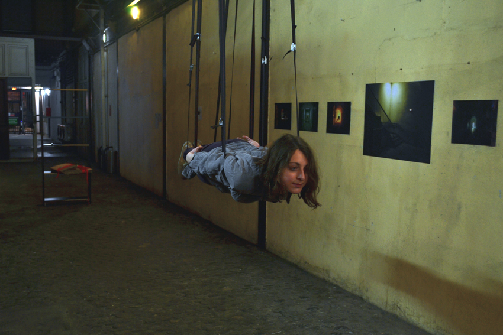

Jessica Arseneau est une artiste Acadienne qui utilise la performance, la video, le dessin et l’installation où chaque série de travail annonce le prochain. Dans son corpus, elle crée un espace de tension poétique ou elle utilise souvent des structures éphémères, le corps humain, des objets readymade provenants du domestique ou de chantiers de construction. Les thèmes de son travail abordent couramment l’imaginaire collectif (musique/littérature), les systèmes de représentation, des événements, des rituels et des gestes. Les expériences et environnements qui en résultent suggèrent une narration en suspens — un récit invraisemblable semble être dans un état temporel entre actions dramatiques successivement créés et celles qui eurent déjà lieux.
Arseneau a reçut un B.A. de l'Université de Moncton (2011) et fut membre de l'atelier d'artiste coopérative Atelier King Kong 2013-2015 (Montréal). Des présentations publiques de son travail eurent lieux à des espaces d'art actuels tels que la Fonderie Darling (Montréal), BronxArtSpace (New York), Galerie Sans Nom (Moncton) et Janaklees pour les arts visuels (Alexandrie). Récemment, son travail a été montré à Traverse Vidéo (Toulouse), HGB Galerie (Leipzig) et à la Galerie Bipolar (Leipzig). Elle étudie présentement à HGB Leipzig en Allemagne.